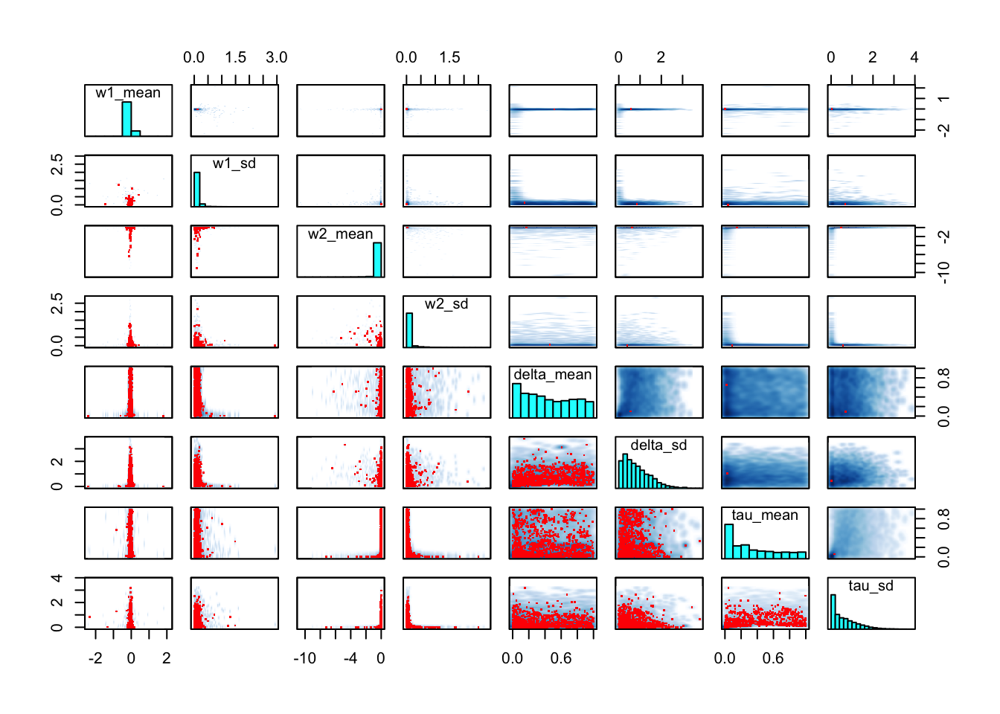

Last updated: 2018-09-03
workflowr checks: (Click a bullet for more information) ✖ R Markdown file: uncommitted changes
The R Markdown file has unstaged changes. To know which version of the R Markdown file created these results, you’ll want to first commit it to the Git repo. If you’re still working on the analysis, you can ignore this warning. When you’re finished, you can run wflow_publish to commit the R Markdown file and build the HTML.
✔ Environment: empty
Great job! The global environment was empty. Objects defined in the global environment can affect the analysis in your R Markdown file in unknown ways. For reproduciblity it’s best to always run the code in an empty environment.
✔ Seed:
set.seed(20180715)
The command set.seed(20180715) was run prior to running the code in the R Markdown file. Setting a seed ensures that any results that rely on randomness, e.g. subsampling or permutations, are reproducible.
✔ Session information: recorded
Great job! Recording the operating system, R version, and package versions is critical for reproducibility.
✔ Repository version: 5a0eee4
wflow_publish or wflow_git_commit). workflowr only checks the R Markdown file, but you know if there are other scripts or data files that it depends on. Below is the status of the Git repository when the results were generated:
Ignored files:
Ignored: .DS_Store
Ignored: .Rhistory
Ignored: .Rproj.user/
Ignored: data/.DS_Store
Ignored: data/derived/.DS_Store
Untracked files:
Untracked: data/derived/av_obs_hier_nospace_fit.RData
Untracked: data/derived/av_obs_hier_space_fit.RData
Untracked: data/derived/av_opt_fixed_nospace_fit.RData
Untracked: data/derived/av_opt_fixed_space_fit.RData
Untracked: data/derived/av_opt_hier_nospace_fit.RData
Unstaged changes:
Modified: analysis/convergence.Rmd
| File | Version | Author | Date | Message |
|---|---|---|---|---|
| html | 37fd55b | ballardtj | 2018-08-08 | Build site. |
| html | 8131ec0 | ballardtj | 2018-08-07 | Build site. |
| html | 6bee1a1 | ballardtj | 2018-08-05 | Build site. |
| html | 1702722 | ballardtj | 2018-08-04 | Build site. |
| Rmd | 75fcdf5 | ballardtj | 2018-08-04 | wflow_publish("analysis/*md") |
| html | 87aeca8 | ballardtj | 2018-08-03 | Build site. |
| Rmd | e52e896 | ballardtj | 2018-08-03 | wflow_publish("analysis/*md") |
| Rmd | a5ebcce | ballardtj | 2018-08-01 | ap and av obs fits |
| html | a5ebcce | ballardtj | 2018-08-01 | ap and av obs fits |
| html | 8b0f5f1 | ballardtj | 2018-07-31 | Build site. |
| Rmd | 81a337c | ballardtj | 2018-07-31 | wflow_publish("analysis/*md") |
| html | 3c49c14 | ballardtj | 2018-07-31 | Build site. |
| Rmd | 9742160 | ballardtj | 2018-07-31 | wflow_publish("analysis/*md") |
| html | f24153e | ballardtj | 2018-07-23 | Build site. |
| Rmd | 87ace09 | ballardtj | 2018-07-23 | wflow_publish(files = c(“analysis/index.Rmd”, “analysis/license.Rmd”, “analysis/about.Rmd”, |
| Rmd | 5027450 | ballardtj | 2018-07-23 | changed alpha to exclude 0 and 1 |
| html | 3561896 | ballardtj | 2018-07-23 | Build site. |
| Rmd | c2f086a | ballardtj | 2018-07-23 | wflow_publish("analysis/*Rmd") |
| html | 631b361 | ballardtj | 2018-07-23 | Build site. |
| Rmd | e4fa9d9 | ballardtj | 2018-07-23 | wflow_publish("analysis/*Rmd") |
| html | b5ce4f6 | ballardtj | 2018-07-23 | Build site. |
| html | 3543c2a | ballardtj | 2018-07-23 | Build site. |
| Rmd | e435974 | ballardtj | 2018-07-23 | wflow_publish("analysis/*Rmd") |
Model description:
| mean s | e_mean | sd | 2.5% | 25% | 50% | 75% | 97.5% | n_eff | Rhat | |
|---|---|---|---|---|---|---|---|---|---|---|
| w1_mean | -0.053 | 0.002 | 0.101 | -0.167 | -0.078 | -0.049 | -0.019 | 0.046 | 2174.657 | 1.003 |
| w1_sd | 0.109 | 0.004 | 0.122 | 0.004 | 0.043 | 0.088 | 0.142 | 0.339 | 1068.083 | 1.009 |
| w2_mean | -0.145 | 0.030 | 0.569 | -1.361 | -0.057 | -0.027 | -0.011 | -0.001 | 366.648 | 1.024 |
| w2_sd | 0.092 | 0.014 | 0.202 | 0.002 | 0.016 | 0.035 | 0.069 | 0.720 | 212.025 | 1.038 |
| delta_mean | 0.440 | 0.011 | 0.299 | 0.010 | 0.171 | 0.403 | 0.709 | 0.966 | 729.922 | 1.010 |
| delta_sd | 0.843 | 0.035 | 0.625 | 0.042 | 0.344 | 0.714 | 1.213 | 2.356 | 311.016 | 1.021 |
| tau_mean | 0.340 | 0.022 | 0.303 | 0.002 | 0.063 | 0.251 | 0.574 | 0.958 | 182.330 | 1.034 |
| tau_sd | 0.625 | 0.041 | 0.606 | 0.004 | 0.123 | 0.450 | 0.966 | 2.130 | 214.599 | 1.026 |
| n_eff P | oint est. U | pper C.I. | |
|---|---|---|---|
| w1_mean | 2675.6421 | 1.173754 | 1.198244 |
| w1_sd | 1061.4456 | 1.058398 | 1.081327 |
| w2_mean | 721.3976 | 1.115940 | 1.203758 |
| w2_sd | 674.0567 | 1.130900 | 1.277601 |
| delta_mean | 1648.0196 | 1.006473 | 1.015315 |
| delta_sd | 1111.6005 | 1.012346 | 1.028417 |
| tau_mean | 507.0922 | 1.053457 | 1.117056 |
| tau_sd | 449.0462 | 1.047959 | 1.106483 |
| <img src="fig | ure/converge | nce.Rmd/unnam | ed-chunk-1-1.png" width=“672” style=“display: block; margin: auto;” /> |
Warning in KernSmooth::bkde2D(x, bandwidth = bandwidth, gridsize = nbin, :
Binning grid too coarse for current (small) bandwidth: consider increasing
'gridsize'
Warning in KernSmooth::bkde2D(x, bandwidth = bandwidth, gridsize = nbin, :
Binning grid too coarse for current (small) bandwidth: consider increasing
'gridsize'
Warning in KernSmooth::bkde2D(x, bandwidth = bandwidth, gridsize = nbin, :
Binning grid too coarse for current (small) bandwidth: consider increasing
'gridsize'
Warning in KernSmooth::bkde2D(x, bandwidth = bandwidth, gridsize = nbin, :
Binning grid too coarse for current (small) bandwidth: consider increasing
'gridsize'
Warning in KernSmooth::bkde2D(x, bandwidth = bandwidth, gridsize = nbin, :
Binning grid too coarse for current (small) bandwidth: consider increasing
'gridsize'
Warning in KernSmooth::bkde2D(x, bandwidth = bandwidth, gridsize = nbin, :
Binning grid too coarse for current (small) bandwidth: consider increasing
'gridsize'
Warning in KernSmooth::bkde2D(x, bandwidth = bandwidth, gridsize = nbin, :
Binning grid too coarse for current (small) bandwidth: consider increasing
'gridsize'
Warning in KernSmooth::bkde2D(x, bandwidth = bandwidth, gridsize = nbin, :
Binning grid too coarse for current (small) bandwidth: consider increasing
'gridsize'
Warning in KernSmooth::bkde2D(x, bandwidth = bandwidth, gridsize = nbin, :
Binning grid too coarse for current (small) bandwidth: consider increasing
'gridsize'
Warning in KernSmooth::bkde2D(x, bandwidth = bandwidth, gridsize = nbin, :
Binning grid too coarse for current (small) bandwidth: consider increasing
'gridsize'
Warning in KernSmooth::bkde2D(x, bandwidth = bandwidth, gridsize = nbin, :
Binning grid too coarse for current (small) bandwidth: consider increasing
'gridsize'
Warning in KernSmooth::bkde2D(x, bandwidth = bandwidth, gridsize = nbin, :
Binning grid too coarse for current (small) bandwidth: consider increasing
'gridsize'
Warning in KernSmooth::bkde2D(x, bandwidth = bandwidth, gridsize = nbin, :
Binning grid too coarse for current (small) bandwidth: consider increasing
'gridsize'
Warning in KernSmooth::bkde2D(x, bandwidth = bandwidth, gridsize = nbin, :
Binning grid too coarse for current (small) bandwidth: consider increasing
'gridsize'
Warning in KernSmooth::bkde2D(x, bandwidth = bandwidth, gridsize = nbin, :
Binning grid too coarse for current (small) bandwidth: consider increasing
'gridsize'
Warning in KernSmooth::bkde2D(x, bandwidth = bandwidth, gridsize = nbin, :
Binning grid too coarse for current (small) bandwidth: consider increasing
'gridsize'
Warning in KernSmooth::bkde2D(x, bandwidth = bandwidth, gridsize = nbin, :
Binning grid too coarse for current (small) bandwidth: consider increasing
'gridsize'
Warning in KernSmooth::bkde2D(x, bandwidth = bandwidth, gridsize = nbin, :
Binning grid too coarse for current (small) bandwidth: consider increasing
'gridsize'
Warning in KernSmooth::bkde2D(x, bandwidth = bandwidth, gridsize = nbin, :
Binning grid too coarse for current (small) bandwidth: consider increasing
'gridsize'
Warning in KernSmooth::bkde2D(x, bandwidth = bandwidth, gridsize = nbin, :
Binning grid too coarse for current (small) bandwidth: consider increasing
'gridsize'NULL
sessionInfo()R version 3.5.1 (2018-07-02)
Platform: x86_64-apple-darwin15.6.0 (64-bit)
Running under: OS X El Capitan 10.11.6
Matrix products: default
BLAS: /Library/Frameworks/R.framework/Versions/3.5/Resources/lib/libRblas.0.dylib
LAPACK: /Library/Frameworks/R.framework/Versions/3.5/Resources/lib/libRlapack.dylib
locale:
[1] en_AU.UTF-8/en_AU.UTF-8/en_AU.UTF-8/C/en_AU.UTF-8/en_AU.UTF-8
attached base packages:
[1] stats graphics grDevices utils datasets methods base
other attached packages:
[1] knitr_1.20 coda_0.19-1 rstan_2.17.3
[4] StanHeaders_2.17.2 ggplot2_3.0.0
loaded via a namespace (and not attached):
[1] Rcpp_0.12.17 highr_0.7 compiler_3.5.1
[4] pillar_1.3.0 git2r_0.22.1 plyr_1.8.4
[7] workflowr_1.1.1 bindr_0.1.1 R.methodsS3_1.7.1
[10] R.utils_2.6.0 tools_3.5.1 digest_0.6.15
[13] lattice_0.20-35 evaluate_0.10.1 tibble_1.4.2
[16] gtable_0.2.0 pkgconfig_2.0.1 rlang_0.2.1
[19] yaml_2.1.19 bindrcpp_0.2.2 gridExtra_2.3
[22] withr_2.1.2 stringr_1.3.1 dplyr_0.7.6
[25] stats4_3.5.1 rprojroot_1.3-2 grid_3.5.1
[28] tidyselect_0.2.4 inline_0.3.15 glue_1.2.0
[31] R6_2.2.2 rmarkdown_1.10 purrr_0.2.5
[34] magrittr_1.5 whisker_0.3-2 backports_1.1.2
[37] scales_0.5.0 htmltools_0.3.6 assertthat_0.2.0
[40] colorspace_1.3-2 labeling_0.3 KernSmooth_2.23-15
[43] stringi_1.2.3 lazyeval_0.2.1 munsell_0.5.0
[46] crayon_1.3.4 R.oo_1.22.0 This reproducible R Markdown analysis was created with workflowr 1.1.1